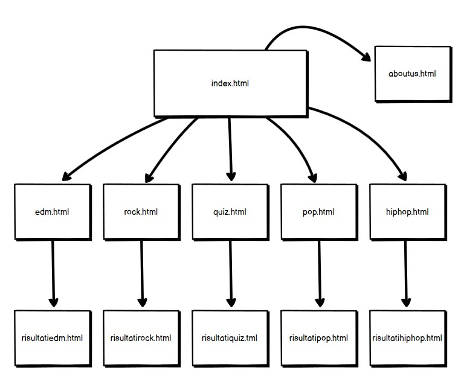
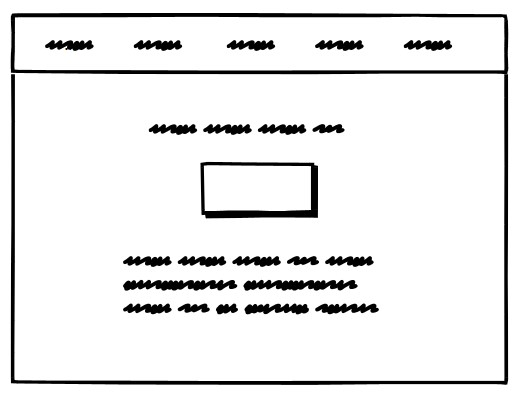
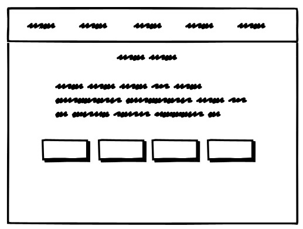
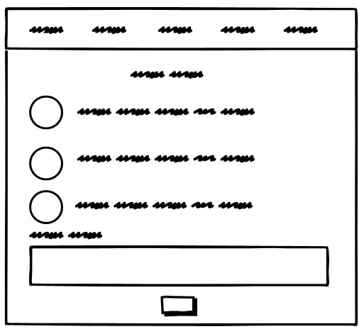
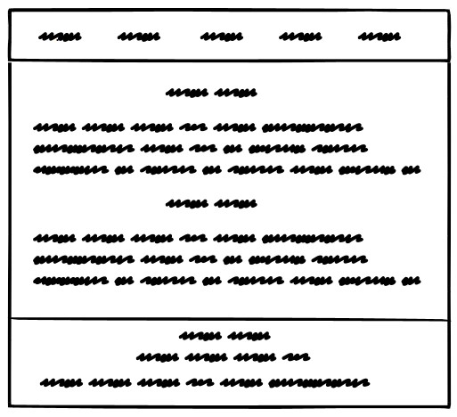
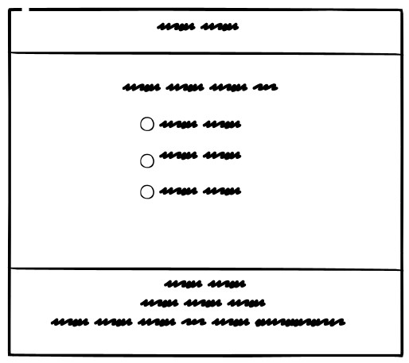
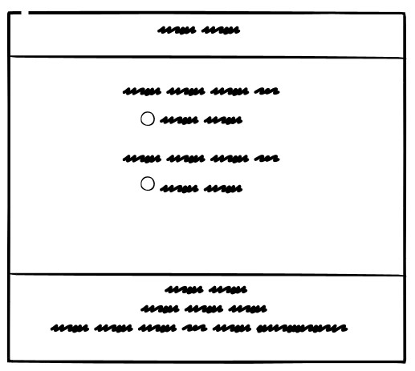
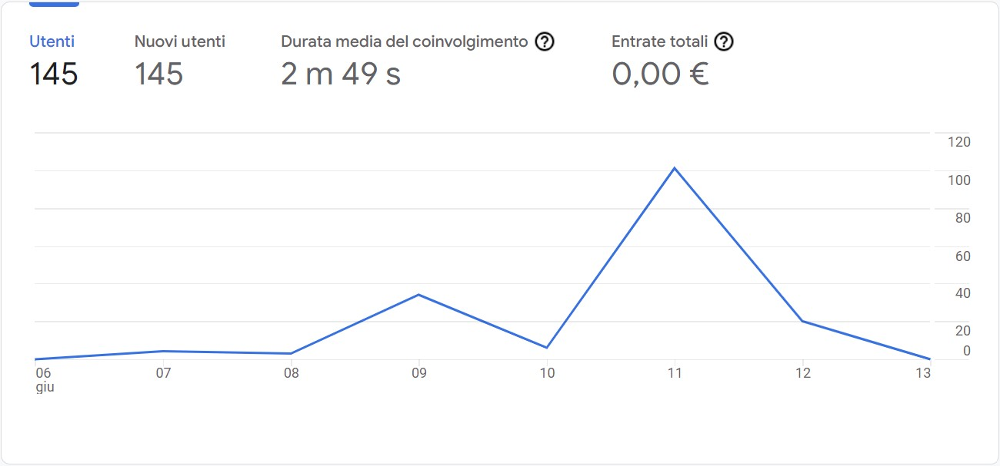
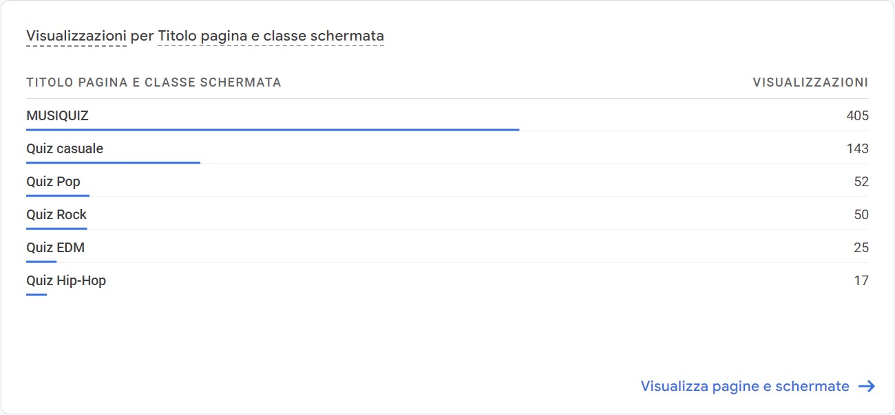
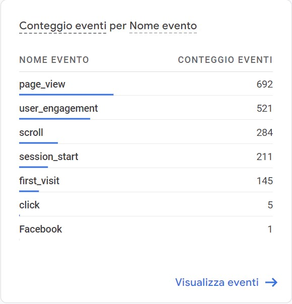

Project Management Plan
Abstract
Gli obiettivi che il nostro sito si pone sono fare divertire i nostri utenti e mettere alla prova le loro abilità in ambito musicale ma nel concreto il nostro obiettivo è quello di raggiungere le 100 visite al sito. Non esiste effettivamente un target primario del nostro sito perché durante lo sviluppo dello stesso lo abbiamo reso il più accessibile possibile a chiunque sia interessato al mondo della musica o che voglia testare le proprie abilità. Durante la fase di pianificazione abbiamo imparato dagli errori dei nostri competitor abbiamo quindi cercato di rendere MusiQuiz un sito che amalgama usabilità, contenuti ed efficienza al meglio.
1. Benchmarking
Obiettivi: Il tema del nostro sito è la musica, nello specifico un quiz sulla musica perciò gli obiettivi che il nostro sito si pone sono fare divertire le persone e mettere alla prova le loro abilità in ambito musicale. Concretamente il nostro obiettivo è quello di raggiungere 100 visite sul nostro sito.
Target utente: Il target primario del nostro sito è composto da chiunque sia interessato al mondo della musica o che voglia testare le proprie abilità.
Competitors: Durante la pianificazione abbiamo analizzato i competitor ovvero siti simili al nostro che affrontano lo stesso tema e per analizzarli abbiamo creato una scala di valori che va da 1 a 5 (1= per nulla soddisfacente e 5= molto soddisfacente). I parametri di valutazione sono: servizi cioè efficienza e completezza dei servizi, usabilità ovvero facilità e intuitività nell’uso del sito e infine informazione e grafica cioè le informazioni e la loro disposizione spaziale. Svolgere questo procedimento ci ha permesso non solo di capire quali sono le caratteristiche fondamentali dei quiz, ovvero i punti di forza, ma anche i punti deboli dei singoli siti analizzati che abbiamo evitato nel nostro.
Ecco un resoconto dei siti presi in esame:
Animatamente:
- Servizi 2/5: Il sito permette di svolgere il quiz ma non si può interagire con esso ovvero non puoi selezionare una risposta che invece si trova al di sotto delle quattro opzioni. Le alternative inoltre non sono indicizzate il che rende più difficile lo svolgimento del quiz.
- Usabilità 2/5: Il sito è diretto e facilmente navigabile perché quando viene aperto mostra subito le domande. Gli aspetti negativi sono il link prima delle domande che porta alla stessa pagina quindi risultando inutile e creando dubbi nell’utilizzatore. Un altro aspetto negativo che crea confusione nell’utilizzatore è la mancata indicizzazione delle risposte, la presenza ridondante dello stesso font e l’assenza di una divisione appropriata tra domande e risposte e tra soluzione e domanda successiva. Un altro fattore che compromette l’usabilità è l’impossibilità di interagire col sito per dare una risposta
- Informazione e grafica 1/5: Il sito presenta un’introduzione al quiz che però è di difficile lettura, ovvero non segue l' F pattern. Il font utilizzato per le domande e le risposte è lo stesso risultando quindi difficile distinguerle, inoltre manca l’interlinea e le risposte non sono indicizzate . Il contenuto “risposta” è l’unica cosa in grassetto e salta all’occhio mostrando però la soluzione. Il bordo a destra dopo circa metà risulta vuoto e privo di contenuti
SuperTV:
- Servizi 4/5: Il sito presenta la possibilità di selezionare le risposte alle domande. A fine quiz non è presente un recap generale delle risposte date, il che rende impossibile capire quali fossero le risposte giuste alle domande che si sono sbagliate.
- Usabilità 3/5: Alcune domande che prevedono la visualizzazione di un immagine sono separate dalla domanda stessa e la semplice visualizzazione dell’immagine viene considerata come uno dei passaggi per completare il quiz.
- Informazione e grafica 5/5: E’ fornita una breve descrizione prima di ogni quiz che spiega cosa si troverà all’interno dello stesso. Il contenuto è disposto in modo sintetico e coerente, inoltre sono presenti elementi simili a lato del quiz principale.
SongTrivia2:
- Servizi 4/5: Il sito non presenta particolari difetti ed è anzi molto fluido e permette una ottimale fruizione del servizio. L’unica pecca è l’assenza della modalità giocatore singolo si è quindi obbligati a giocare con altre persone. Un punto a favore è la schermata di inizio partita nella quale si possono vedere le impostazioni con le quali si sta per iniziare un quiz.
- Usabilità 4/5: Il sito è intuitivo ed immediato, ma è presente il link ad una ipotetica modalità giocatore singolo che però non esiste. Alla fine di ogni partita ci sono i tasti “migliori giocatori” e “la mia posizione” i quali però non sono selezionabili.
- Informazione e grafica 5/5: Come nel sito precedente le informazioni sono disposte in maniera coerente e sintetica. Il sito fornisce le informazioni necessarie alla comprensione del funzionamento del quiz.
2. Struttura e layout
Architettura del sito
Wireframe
     Look and feel:
- I font utilizzati sono Koulen per i titoli e le intestazioni per dare un senso di importanza ed ordine e Lora per il testo per affaticare meno l’utente durante la lettura.
- La palette dei colori del sito è composta principalmente da due colori che si alternano ovvero viola e bianco poiché creavano un contrasto gradevole. Il bianco è stato utilizzato per la barra di navigazione e per il footer, mentre il viola è stato scelto per lo sfondo.
- Le MusiCategorie hanno colori indipendenti dal resto del sito perché devono rappresentare l’argomento di cui trattano
- Nella barra di navigazione ogni elemento è associato ad un icona che lo definisce, la più significativa è la nota musicale utilizzata come logo del sito che appare anche come favicon.
3.Linguaggi e strumenti
Linguaggi
- HTML
- CSS
Strumenti
- Bootstrap: E' stato utilizzato per parti del sito con codice impegnativo che risultavano più accattivanti. Nello specifico la barra di navigazione, i vari pulsanti, la sezione commenti e le checkbox dei quiz.
- Fontawesome.com: E' stato fondamentale per la scelta delle icone utilizzate nella barra di navigazione a supporto del testo scritto.
- Sublimetext: E' il text editor per la codifica del sito
- Github: E' il DVCS per la condivisione dei contenuti del sito tra colleghi e per la pubblicazione con la docente.
- Google analytics: E' lo strumento per la raccolta e analisi dei dati riguardo alle visite del sito.
- Favicon.ico: E' il sito utilizzato per l’icona visualizzata nella tab del progetto.
- Google fonts: E' stato importante per la decisione delle font utilizzate all’interno del sito.
Communication Strategy Plan
1. BACKGROUND
Nei siti analizzati le domande erano sempre varie e si imparavano sempre cose nuove ma non era curato l’aspetto dell’usabilità e dell’efficienza al 100%, ovvero l’interlinea tra le varie domande non era sufficiente oppure non si potevano visualizzare le risposte a fine quiz. MusiQuiz invece racchiude e armonizza usabilità, contenuti ed efficienza al meglio.
2. OBIETTIVI COMUNICATIVI
Gli obiettivi che il nostro sito si pone sono fare divertire le persone, metterle alla prova e diffondere la conoscenza sulla musica. Nel concreto il nostro traguardo principale sarebbe raggiungere le 100 visite sul nostro sito.
3. TARGET, AUDIENCE E MESSAGGIO
Il target principale del nostro progetto è composto da chiunque sia appassionato di musica, che voglia testare le proprie abilità o che voglia imparare qualcosa. Dunque il messaggio che vogliamo diffondere è che in 15 minuti è possibile imparare divertendosi.
4. PROMOZIONE
Per promuovere MusiQuiz abbiamo fatto passaparola del nostro progetto, condiviso il link del sito nelle storie di instagram e su diversi gruppi whatsapp che rispecchiano il nostro target.
5. VALUTAZIONE DEI RISULTATI
A seguito della promozione il target audience che ci eravamo preventivati è stato raggiunto in modo efficace, infatti i responsi sono stati molto soddisfacenti. Possiamo dimostrare tutto questo non solo grazie ai commenti positivi che abbiamo ricevuto di persona dagli utenti che hanno visitato il sito ma oggettivamente anche dai risultati di google analytics che verranno riportati di seguito.
Dati relativi agli utenti unici che hanno visualizzato il sito
Dati relativi al numero di visualizzazioni di ogni pagina del sito
Dati relativi alle singole azioni eseguite all'interno del sito